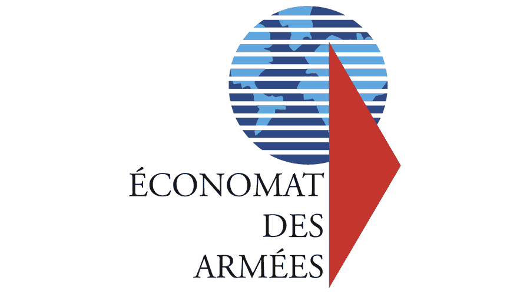

L'ÉCONOMAT DES ARMÉES

L'Économat des Armées est un organisme public français qui occupe un rôle crucial dans le soutien des forces armées. Sa mission principale est de fournir et de gérer les ressources matérielles nécessaires aux opérations militaires. Ces ressources incluent
divers biens essentiels tels que les équipements, la nourriture, l'habillement, et d'autres matériels stratégiques indispensables à l'activité militaire. En tant qu'acteur clé de la logistique militaire, l'Économat des Armées assure un approvisionnement
constant et fiable, contribuant ainsi directement à la préparation et à l'efficacité des forces armées françaises. Son objectif est de garantir que les soldats disposent des ressources nécessaires pour accomplir leurs missions dans les meilleures
conditions possibles, en renforçant leur capacité opérationnelle et en assurant un soutien optimal sur le terrain.
Lors de mon stage en tant avec un administrateur réseau de Économat des Armées, j'ai acquis une expérience précieuse dans la gestion et la sécurisation des infrastructures réseau. Mes principales missions ont été variées. J'ai d'abord configuré un pare-feu
Fortigate pour filtrer les sites inappropriés. Ensuite, j'ai activé des journaux pour suivre les activités réseau. Une autre de mes missions a été la mise en place d'un VPN, permettant des connexions sécurisées à distance. J'ai aussi assuré
une traçabilité via les logs de Fortinet. Enfin, j'ai automatisé le déploiement d'images ISO sur plusieurs machines, en utilisant un switch pour faciliter ce processus. Cette expérience m'a permis de développer des compétences solides en administration
réseau, en sécurité informatique, et en gestion de problèmes techniques.
DC2SCLALE
DC2Scale est une entreprise qui se spécialisée dans l’hébergement et la gestion d’infrastructures informatiques. Elle propose des solutions de cloud computing et de data centers hautement sécurisés, permettant aux entreprises d’externaliser et de moderniser
leurs systèmes tout en optimisant leur efficacité. Grâce à son expertise en technologies avancées, DC2Scale offre des services fiables et flexibles, adaptés aux besoins spécifiques de chaque client. L’entreprise accorde une importance
majeure à la sécurité des données et garantit des performances optimales, contribuant ainsi à la transformation numérique et à la compétitivité des entreprises.
Technicien Datacenter
Lors de mon stage en entreprise dans un datacenter j'ai acquis une expérience précieuse dans le montage et l'installation d'infrastructures informatiques pour des clients. Mes principales missions ont été variées. J'ai commencé par monter des baies et
installer des mineurs ainsi que des serveurs destinés à des environnements professionnels. J'ai également contribué à l'installation et à la configuration de logiciels tels que Proxmox pour la virtualisation et FortiGate pour assurer la
sécurité réseau. Ces outils ont été essentiels pour garantir le bon fonctionnement des infrastructures déployées. Cette expérience m'a permis de développer des compétences en gestion matérielle en déploiement de solutions logicielles.